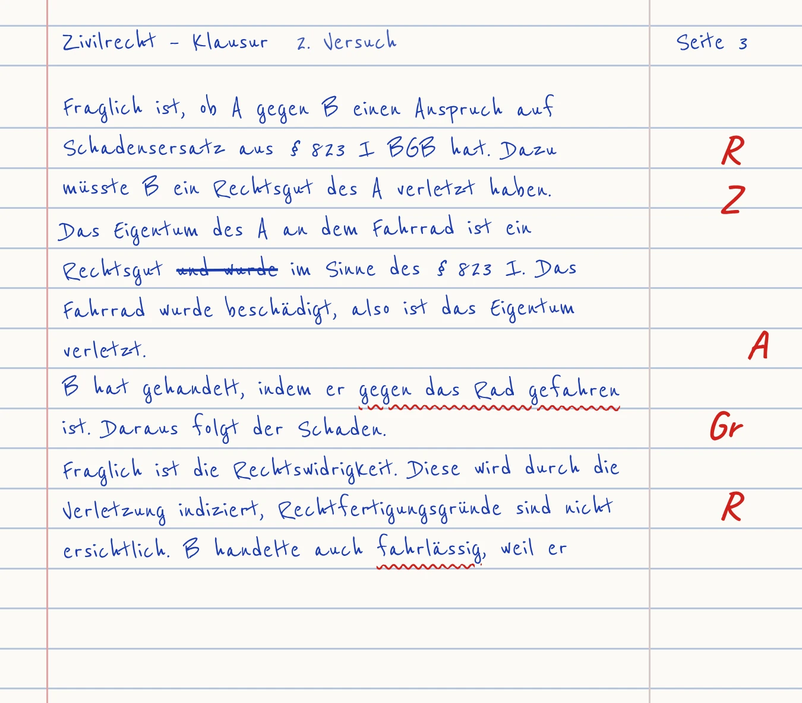
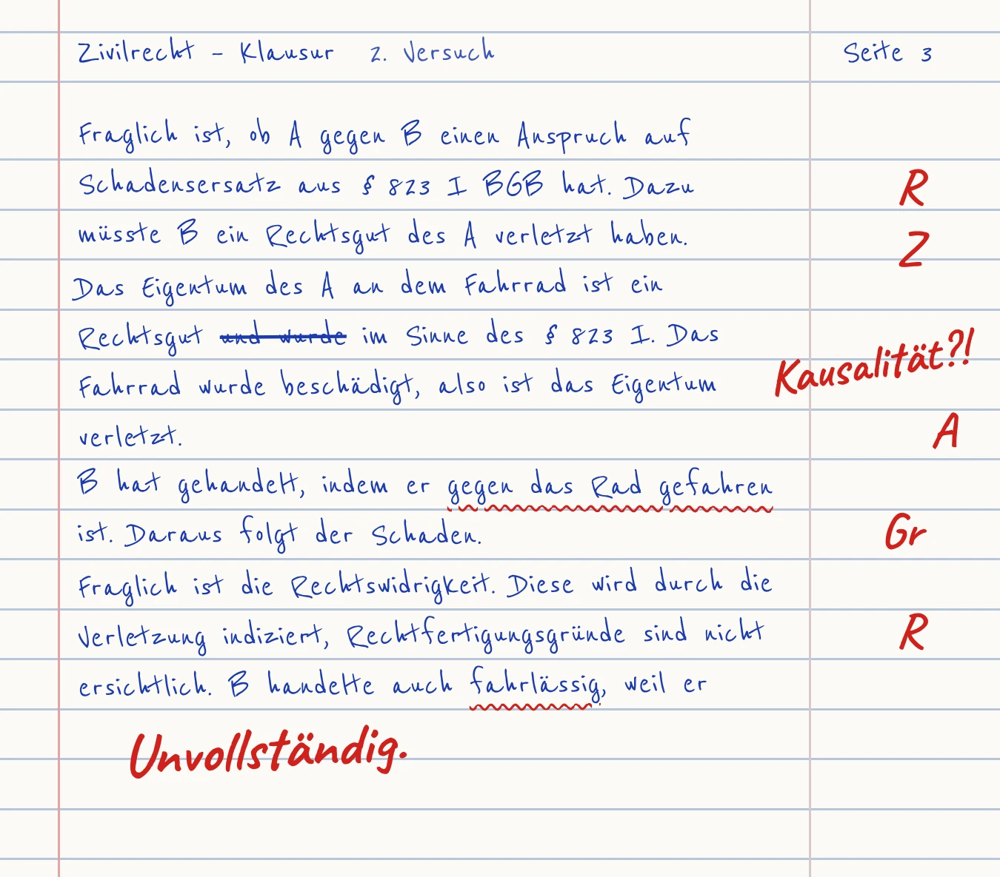

Sonntag
Schuldrecht AT
BGB AT
Deliktsrecht
Bereicherungsrecht
Fälle 1–5
§ 823 I BGB
Rechtsgut verletzt
Handlung
Kausalität
Rechtswidrigkeit
Verschulden
tippen
23
◀ Rückblick · tippen = weiter
▼
⏪
☰
🐞
BGB
SCHULDRECHT
SKRIPT
§
Du
verpasst
was
00:00
✓✓
00:00
✓✓
00:00
✓✓
0 neue Nachrichten
Weiter
Abzeichen
Zurück
Zurück
Stoppuhr (Testmodus)
Weiter
📱
Bitte drehen – das Spiel läuft im Querformat.